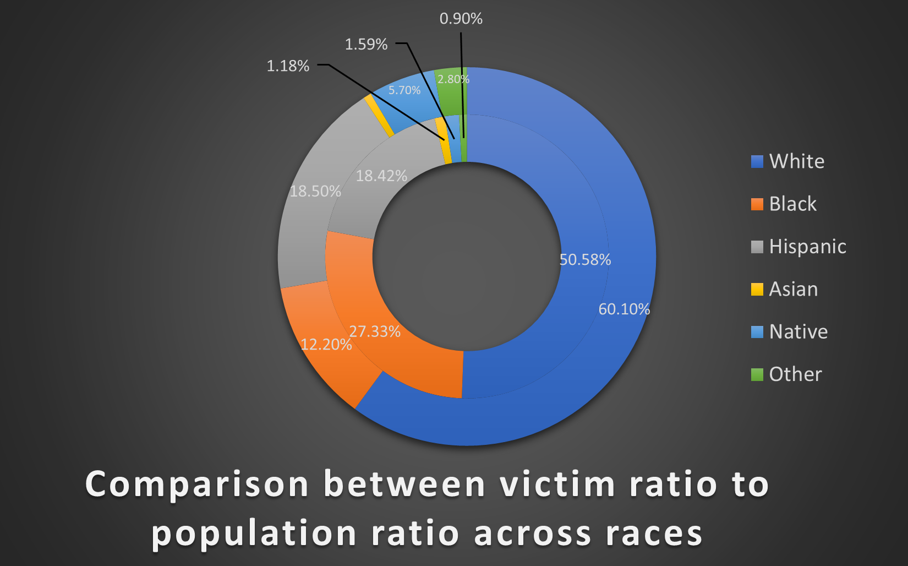
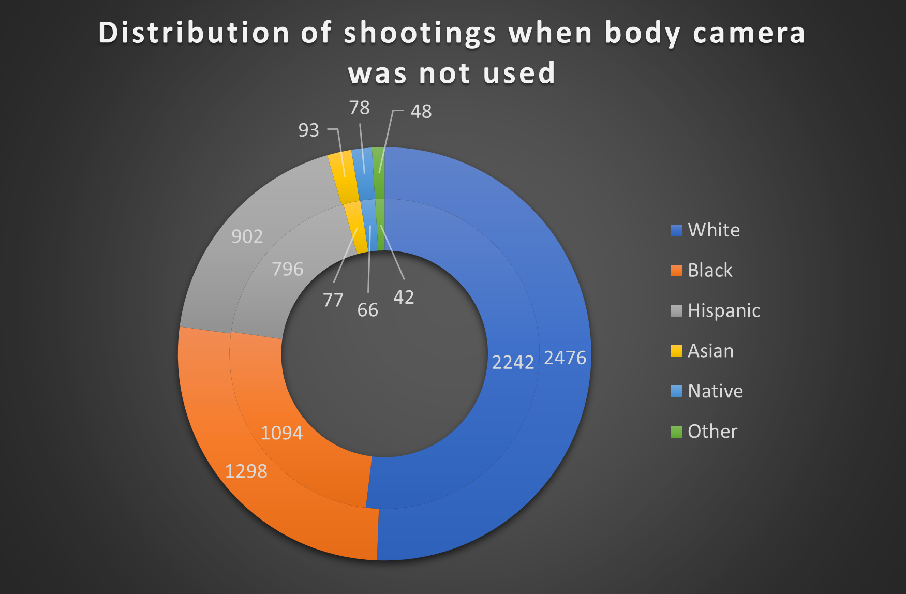
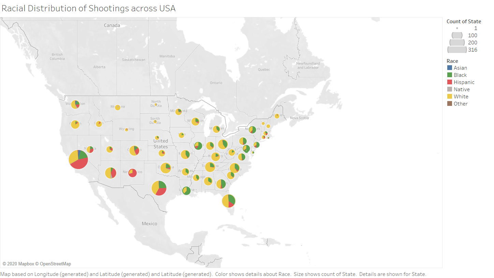

This is the oath that all Law Enforcement Officers in the United States must take before beginning duty.
Compared to other high-income countries, the United States of America has a much higher rate of police killings.
It averages around 1000 police killings a year. For such a high number of people dead, there is bound to be some scrutiny in the practices of law enforcement that leads to such actions.
Recently, the unethical practices of local police departments have come under fire because of collective outrage of the people.
On May 25th, 2020, a bystander’s viral clip showed us this harrowing exchange between 3 police offers,
and George Floyd. The extremely graphic video was widely circulated on the internet and television news.
-I’m claustrophobic. My stomach hurts.
-Uh-huh
-Everything hurt. I need some water or something. Please. Please. I can’t breathe, officer.
-You’re doing a lot of talking, a lot of yelling.
-They going to kill me. They’re going to kill me, man.
-Takes a heck of a lot of oxygen to say that.
-I cannot breathe. I cannot breathe. Please, sir. Please.
-You want him on his side?
-No, leave him. Staying put where we got him.
-He’s not breathing right, man.
-That why we got the ambulance coming. That’s fine.
For a lot of people, this was the first time they witnessed something so brutal, and merciless. This excessive use of force by law enforcement officers is not news for a lot of people of color.
 The graph above clearly shows that a disproportionate number of black people are killed by law enforcement officers. This calls into question the training, and motives behind the huge number of deaths to begin with.
Here we take a closer look at the comparison between police killing black and white people and their age groups respectively.
The chart below shows how many people were killed while the police officer had a bodycam active (outside) vs the total number of shootings (inside)

These statistics show a troubling increase in the number of black people killed particularly in the case when there are no bodycams active.
This implies a correlation between the bodycams and reducing the number of wonton deaths due to abusive police officers.
Let us take a look at the overall distribution of police shootings in the United States.

The highest population states do indeed have higher numbers of police shootings, but it is interesting to look at the racial composition of them as well.
US police murder rates are higher than in other developed countries, it is 4 times the rate in Canada, 22 times the rate in Australia, 40 times the rate in Germany, and 125 times the rate in England.
The graph below shows the numbers for three states with the highest shootings in the country. Coincidentally, these states also happen to have some of the highest
percentages of minorites in the state.
Clicking on the graph shows you the the same breakdown for the top four cities in the state.
Every year in the United States, the police kill approximately 1000 people. This number is not significantly affected by any other factors, and as we can see in the graph below, it also has an almost consistent racial breakdown.
Killings per racial group:
Zoom in: 0 100
Looking at the trends from the last few years, we can see that there does not seem to be any noticeable difference in the number of police shootings despite many reforms and attempts to curb these instances of abuse of power.
Color by:
As we have seen over the course of 5 years in this data, the amount of shootings by police officer has been constant and has not really changed.
Our analysis shows that there are a lot of variations in the trends that cannot be accounted for.
The correlation to age and race of the victims are two factors we looked at closely.
While there have been steps taken to mitigate these worrying statistics, it is evident that it has not worked.
In the wake of reinvigorated movements like the Black Lives Matter movement, we can hope to see a new set of actions being taken that directly address the problems at the root.
From our analysis, we suggest the increased use of bodycams, as our data suggests a lower rate of police shootings when officers use bodycams.
QUESTION 1: How many people were shot by Police in San Antonio, Texas?
40
62
24
QUESTION 2: What percent of Hispanic people were shot by Police?
13.4%
18.5%
18.42%
QUESTION 3: How many people were shot by Police in Los Angeles, California ?
55
78
72
QUESTION 4: Which year among those listed had the highest number of Native American deaths ?
2016
2018
2017
QUESTION 5: Which age group has a greater proportion of black people shooted than whites?
<25
>30
>15